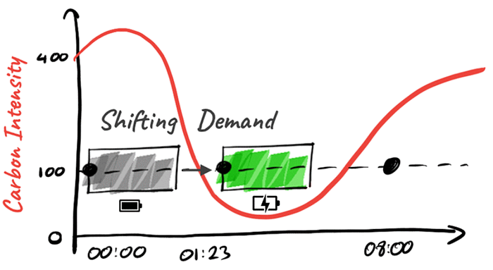

Carbon Aware Computing
Execute computing tasks when the grid is powered by renewable energy.


Execute computing tasks when the grid is powered by renewable energy.
Get tools to forecast the best execution time for tasks to minimize carbon emissions. All libraries and data are open source & open data with unrestricted usage within personal, open source and commercial software.
The basic idea behind the time shifting approach is moving the computing load into a point in time when the power grid has a maximum of renewable energy. This will result in a lower emission of CO2 of your computing task.
In addition to energy and hardware efficiency, carbon efficiency is one of the most important principles of green software development, like the Energiewende. Energy is used when it is available from renewables. We shift the energy demand to a point in time when the carbon intensity of the grid is lower. To do this we need forecast data and some libs to calculate the appropriate execution window.

A set of packages for .NET, public forecast Web-API and access to the forecast json formatted files.
For more details, download and usage check the GitHub Repository.
This project delivers a set of libraries, services and data. They are mostly extensions to other projects and all credits belong to them. To forecast the best execution time the Carbon Aware SDK from the Green Software Foundation is used; the forecast data is from Energy Charts provided by Frauenhofer ISE.
Install-Package CarbonAwareComputing.ExecutionForecast
var provider = new CarbonAwareDataProviderOpenData();
var forecast = provider.CalculateBestExecutionTime(
ComputingLocations.Germany,
DateTimeOffset.Now,
DateTimeOffset.Now + TimeSpan.FromHours(8),
TimeSpan.FromMinutes(20)
);
var executionTime = forecast.Match(
noForecast =>
{
Console.WriteLine("No forecast. Use fallback");
return DateTimeOffset.Now;
},
bestExecutionTime =>
{
return bestExecutionTime.ExecutionTime;
});
We provide a live and ready to use subset of the Carbon Aware SDK. The API is available at https://forecast.carbon-aware-computing.com/. Use the Swagger UI to play around with the API.
To use the API, you must register to the service by submitting a valid email address. Please check the register endpoint in the Swagger UI. The API-Key is sent to this email.
We will use this address only to inform you about important changes to the service.
For more details check the GitHub Repository.
Use a PowerShell Cmdlet in automation scripts to forecast the beste execution time.
The module is available from PowerShell Gallery.
Install-Module -Name CarbonAwareComputing
Install-Package Hangfire.CarbonAwareExecution
builder.Services.AddHangfire(configuration => configuration.
UseCarbonAwareExecution(
new CarbonAwareDataProviderOpenData(),
ComputingLocations.Germany));
We have fork the Carbon Aware SDK and provide the SDK as a NuGet-Package. The fork has also some additions for cached data provider. You may use this package for your extensions.
The unofficial Carbon Aware SDK is available from nuget.org.
Install-Package GSF.CarbonAware.Unofficial
The forecast data is gathered from Energy Charts provided by Frauenhofer ISE. It is licensed as CC0. You may use it for any purpose without any credits.
The forecast data is available as json formatted files, separated for every single location. The files are directly consumable by the Carbon Aware SDK. For more details and download instructions check the GitHub Repository.
The forecast data is based on reported energy production (current) and forecast production for Wind (on-shore & off-shore) and Solar. There are publicly available from the ENTSO-E Transparency Platform maintained by the power grid Transmission System Operators (TSO). For the additional renewable energy sources like running water or biomass, the forecast is calculated as an interpolation of the last hours.
We support all European countries. To avoid unnecessary computation, not all are active. Currently we provide data for Germany, France, Austria and Switzerland. If you have a need for some other countries, please contact us. We will activate that country.
Every contribution is warmly welcomed.
You may contribute to forecast data for other regions than Europe or help to integrate time shifting in other popular processing systems and libraries. Migration to other programming languages and runtime systems is very efficacious as well. Please drop a message to am@bluehands.de to get in touch.